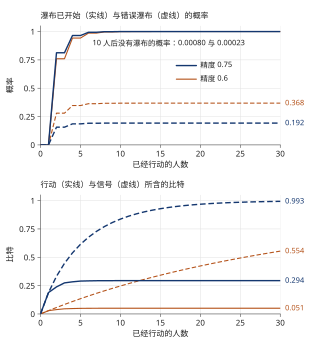

第 14 章 信息瀑布与羊群行为
Joel Hasbrouck（1991）测量了 1989 年第一季度里各笔交易怎样一笔接着一笔出现。对他的代表性股票 Ames Department Stores，他把每笔交易的方向（买入或卖出）与此前各笔交易的方向、此前报价的变动联系起来，用的是这个季度里的全部交易。前三笔交易的方向上的系数是 .167、.120 和 .078，往前第四笔和第五笔的系数较小，是 .021 和 .034，其中第四笔在通常的水平上与零没有显著差别（本书的判断）。他把这些估计读作交易中很强的正自相关：买入之后往往又是买入，卖出也类似，低滞后阶上的这种格局他称为极为典型。在低阶和中阶滞后上，他发现存货控制（inventory control）本会产生的反转（reversal）明显缺失，存货控制指交易商（dealer）调整报价，消化她不想持有的头寸，他还发现，短期内正自相关占上风，更符合对新信息的滞后调整。1
这样的连串有几种可能的来源（本书的判断）。Hasbrouck 写道，存货控制会使交易出现序列相关，价格压力（price pressure）和拆单（order fragmentation）也一样，拆单指把一笔大单拆成许多小单；对信息的滞后调整和交易所规定的价格平滑（price smoothing）也涉及序列相关，价格平滑是一条让价格不出现大幅跳动的规则。因为别人买了而买的人也会给出连串，又因为只看交易的方向分不开这些来源，本书不把这些连串读作交易者有羊群行为（herding）的证据（本书的判断）。
根模型（root model）假设无观察学习（no observational learning）：没有人看到别人的行动或行动的结果。5.8 节的表 5.1 把这一条默认与其他默认一起列出，本章去掉它，问的是看着别人在什么条件下会使行动趋同、趋同之后信息会怎样、价格随交易变动时又有什么变化（14.9 节）。
14.1 观察行动来代替信号
Banerjee（1992）给出一个例子。两家餐馆 A 和 B 紧挨着，A 更好的先验概率（prior probability）是 51%，B 更好的是 49%。人们一个接一个到来，看到前面的人的选择，然后在两家里挑一家，每个人各有一个同样质量的私人信号（private signal）。100 个人里，99 个人的信号说 B 更好，但信号偏向 A 的那一个人最先选。对信号偏向 B 的第二个人，两个信号相互抵消，所以她按先验走，选了 A；她的选择对第三个人没有带来新东西，此后每个人也一样。结果人人都落在 A，尽管 100 个人的信息合起来几乎可以确定 B 更好。
Banerjee 称之为 herd behavior，即人人都做别人在做的事，即使自己的私人信息（private information）提示他们做相当不同的事；本书的用词是羊群行为。第二个人决定不理会自己的信息，给其余的人带来负的外部性。这是表 13.1 里对应从他人行动中做贝叶斯学习的那一格。
Bikhchandani、Hirshleifer 与 Welch（1992）集中讨论信息最少的情形，即人们只观察到前面的人的行动。在他们的二元例子里，每个人采纳的成本相同，都是 1/2，采纳的收益也相同，是 0 或 1，先验概率各占一半。每个人的私人信号是 H 或 L；收益为 1 时 H 以概率 出现，收益为 0 时以概率 出现，人人的精度都是同一个 。对采纳与拒绝无所谓的人，以相等的概率选其中之一。如果第三个人前面的两个人都采纳了，他即使拿到 L 信号也会采纳，这开启一个 UP 瀑布；如果两人都拒绝了，他即使拿到 H 信号也会拒绝，这是 DOWN 瀑布；如果一人采纳、另一人拒绝，单看行动，他的处境与第一个人相同，采纳的期望值是 1/2，所以由他的信号决定。
按他们的定义，一个人的行动不依赖他的私人信号时，就出现了信息瀑布（information cascade）。后面每个信号都来自同一个分布，所以下一个人也在瀑布里，瀑布一旦开始就永远持续，即使它是错的。作者补充说，如果信号的分布不同，如果后来有公共信息（public information）到来，或者基础的价值会变，瀑布可能很容易中断（后来的公共信息在 14.3 节讲）。
这里每个人都按贝叶斯法则（Bayes’ rule）从共同先验（common prior）出发更新，去掉的那一条默认是无观察学习（本书的判断）。一个人的收益不取决于后面的人怎么做，所以没有人有理由违背均衡（equilibrium）去影响跟在后面的人，均衡可以从第一个人起，一个人一个人地解出来（本书的判断）。2
14.2 行动一致而信息停滞
在二元例子里，瀑布来得很快。两个人之后，出现 UP 瀑布、没有瀑布和出现 DOWN 瀑布的概率分别是 、 和 ；人数 为偶数时，没有瀑布的概率是 ，其余的概率在两种瀑布之间平分。所以不在瀑布里的概率随人数指数下降；即使信号只比抛硬币好一点点，只要 10 个人，这个概率就低于 0.1%。信号越精确，瀑布往往开始得越早， 越接近 1/2，开始得越晚。
这个瀑布完全可能是错的。在收益为 1 的条件下，作者给出了正确瀑布、没有瀑布和错误瀑布的概率的闭式（数学框 14.1），并发现即使信号的信息量很大，错误瀑布的概率也高得惊人；随着人不断到来，它在 时趋向 0.368，在 时趋向 0.192（本书的计算）。在他们的一般模型里，信号取有限多个值，信号满足单调似然比（monotone likelihood ratio），即信号越高，推断的收益越高，并且没有长期的持平，即学得足够多的人对采纳和拒绝不再无所谓，这时瀑布最终开始的概率随人数增多趋近于 1，而且很可能发生在许多有信息量的行动足以把收益几乎完全揭示出来之前，常常是一个很早就开始的错误瀑布。
瀑布一旦开始，行动就不传达私人信号的信息，所以一个人的行动改善不了后面的决定。公共信念（public belief）是新来的人只根据行动的历史，对瀑布所偏向的那个收益所给的概率，它停在瀑布开始时的位置，即 ，不论是哪两个人开启了它。如果前面的人的信号换成可以观察到，即使信号的主人自己不照它去做，这个信号也会加入共同的知识库，所以足够长的一串相反的信号最终会改变行为；对任何一串信号，在行动可观察的制度里瀑布开始之前，两种制度的行为完全一样，瀑布开始以后，它再也不会逆转。
这里分出两层（本书的判断）。采纳的比例倒向一边并停在那里，而公共历史对收益说的话停在瀑布开始的地方。根模型的自我加速（self-acceleration）要求人们复制的东西带着信息（5.2 节），而在瀑布里，复制来的行动不带任何信息（本书的判断）。对数几率（log-odds）是几率的对数，相互独立的信号在它上面直接相加。在对数几率上，瀑布的公共信念在 时抵得上 1.33 个私人信号，在 时抵得上 1.31 个，不论有多少人跟随（本书的计算；数学框 14.1），这与作者的直觉一致，即瀑布聚合的只是少数几个早期个人的行动所含的信息。贝叶斯的新来者对加入瀑布的人不给任何权重，说服偏差（persuasion bias）把每一次重复都算作又一条证据，做法正好相反（本书的判断；13.6.3 节）。
图 14.1 把这两层在 和 下画出来，第二个是作者自己的数值例子。按比特（bit）计，即一个比特把可能性减半，所以收益起初有一个比特的不确定性，行动在极限处带有的关于它的信息是 0.051 和 0.294 比特；而同样这些人的信号，如果是公开的，30 个人之后会带有 0.554 和 0.993 比特，一个信号则是 0.029 和 0.189 比特（本书的计算）。3

14.3 瀑布的条件
看着别人，本身并不产生羊群。Banerjee 指出，人们观察别人的决定，这件事本身并不保证出现羊群行为：当每个人在给定自己的信号和前人的选择之下，选出对一个均值的最佳猜测，损失是她误差的二次函数时，对几乎每一串信号，选择都收敛到这个均值。他把差别追溯到这一点：在他的主模型里，选择并不总是其背后信息的充分统计量（sufficient statistic）；他还推测，在选择与信号的维度相当、收益连续时，选择通常会揭示信号。
Smith 与 Sørensen（2000）研究贝叶斯理性的人怎样一个接一个地从别人的离散行动中学习。一个人的私人信念（private belief）是她按贝叶斯法则，根据自己的信号给高状态 H 的概率。私人信念的范围 0 和 1 都达不到时，它是有界的；两端都达到时，就是无界的私人信念（unbounded private beliefs），也就是说，在每个方向上总有某个信号，不论多么罕见，都能把信念推到任意接近确定；只达到一端的范围，既不算有界，也不算无界。在只有一种理性类型（type）、每个人在每个状态下对行动的排序相同、又没有噪声（没有人随机行动）的情况下，对某个行动的羊群几乎必然在有限时间内出现；私人信念无界时，人们几乎必然定在最优行动上；私人信念有界时，除非公共信念一开始就处在以最赚钱的行动为方向的瀑布里，否则以正的概率会在另一个行动上出现羊群。严格有界的信念是 Bikhchandani、Hirshleifer 与 Welch 的坏羊群的主要支柱：在二元例子里，一个信号把几率乘以 或除以它，不能再多（本书的推导）。
在这些模型里，错误的羊群需要两个条件，一是行动不揭示其背后的信号，二是私人信念有界（本书的判断）；私人信念无界时羊群照样形成，几乎必然落在正确的行动上。
羊群与瀑布也有区别。对 Smith 与 Sørensen，瀑布指信念在有限时间内收敛，即公共信念进入瀑布集（cascade set），也就是公共信念的这样一个范围，处在其中时一个人的行动不再依赖她自己的信号；此后每个理性的人的行动都由历史决定，所以瀑布迫使羊群出现，在羊群里同一类型的理性的人都做同样的事。在他们私人信念有界的例子里，一开始不在瀑布集里的公共信念永远进不了瀑布集，虽然羊群最终总会开始；只要延续函数（continuation function），即每个行动推动公共似然比的规则，总是递增的，这个结果就成立，因为这时比值永远不会跳进闭的瀑布集；在 Bikhchandani、Hirshleifer 与 Welch 的离散信号世界里，这种单调性不成立，这一点至关重要。他们总结说，没有离散信号，瀑布就不一定出现：即使在羊群行为期间，也不必有哪个决定成为定局。按本书的读法，瀑布要在有限时间内开始，还需要有一个行动能把公共信念带进瀑布集，离散信号允许这样的行动（本书的判断）。
这种一致很脆弱。比一个私人信号信息量更少的公共信息，就能打碎一个持续很久的瀑布（他们的结果 3；12.8 节），而在第一次决定之前发布的、噪声很大的公共信息，可以使一些人在事前意义上变得更糟（结果 2；4.7 节）。作者说这种一致易碎：小的冲击就能轻易改变许多人的行为。4
14.4 混淆学习
Smith 与 Sørensen 给出一个例子。在一条修建中的高速公路上，去休斯敦的司机在状态 H 下应当走高的出口匝道，在状态 L 下走低的，去达拉斯的则相反。如果在某个公共信念下，随机的一辆车在状态 H 与状态 L 下走高匝道的可能性一样大，那么从后面的决定里推不出任何东西，学习就停了。
在他们的一般模型里，人们对行动的排序可以不同，类型又观察不到，所以对任何一个人，只能做统计推断。信念这时可能收敛到一个点，在那里历史对任何人都没有决定性的教训，每种类型的行动永远在两个行动之间分开，他们把这称为混淆学习（confounded learning）。他们的定理 2 假设至少有两种理性类型，并发现混淆点（confounding outcome）稳健地存在，而且不随噪声变化；稳健是就模型的参数来定义的，即它的偏好、类型和噪声的份额，本书把它读作对某些参数值和与之接近的值存在（本书的判断）。在任何一个混淆点上，总有某一对类型的偏好相反。如果信念的分布是离散的，如二元例子，混淆学习不属一般情形（nongeneric）；行动多于两个而信念无界时，一般情形下（generically）不存在混淆点。行动有两个、偏好相反时，信念有界、有两种类型、两种类型在某个公共信念范围内都活跃，则一般情形下存在混淆学习点；信念无界时，如果相反的两类的偏好差得足够大，并且如他们的引言所补充，两类的份额不太不均等，混淆学习点就存在，所以即使不可能出现错误的羊群，这个结局也存在；其余的前提在注里。
噪声，即人们随机地固定在某些行动上，在长期里会消去，不影响收敛；按本书的读法，动机相反的理性类型产生这种停止（本书的判断）。
本章里无界的信念带来学习的那些结果，都假设偏好一致（本书的判断）：Smith 与 Sørensen 的定理 1(b) 和 3(b) 假设只有一种理性类型，14.6 节的网络模型里，Acemoglu、Dahleh、Lobel 与 Ozdaglar 假设给定状态后人人偏好同一个行动，并把异质的偏好列入他们的框架可以研究的问题（工作论文版）。
在市场里，对同一条消息动机相反的交易者，有人为了减少自己在别处承担的风险而根据这个信号卖出，另一些人则买入，在适当的比例下可以使订单流（order flow，买单与卖单的净额）对方向不带信息（本书的判断）。买入、卖出和不入场是三个行动，所以信念无界时，定理 2(e) 使这样的点在一般情形下不存在（本书的判断）；信念有界时，行动多于两个的模型仍有混淆点，因为在一段公共信念范围内完全可能只有两个行动有人采取。Smith 与 Sørensen 的模型没有价格，价格随交易变动时混淆点是否还在，第 16 章留作未决。5
14.5 聚合停止的三种形态
汇集的停止有三种形态，表 14.1 把它们并排列出（本书的判断）。在行动一致的形态里，同一类型的人做同样的事，信息停在瀑布开始的地方，或者在 Smith 与 Sørensen 的一种类型、信念有界的羊群里，只向一个达不到真相的极限继续增长。在沉默的形态里，知情者不再行动：Avery 与 Zemsky 转述了 Lee（1995）的结果，即存在交易成本（transaction cost）时会出现信息瀑布，因为这时知情交易者（informed trader）几乎必然在某个时候停止交易，此后没有新信息到达市场（据 Avery 与 Zemsky 的转述；工作论文版）；第 21 章读 Lee 的论文。在相互抵消的分裂行动的形态里，也就是 Smith 与 Sørensen 的混淆学习，各类型继续做不同的事，他们的行动对状态什么也没有说（14.4 节）。Avery 与 Zemsky 的带价格的羊群行为，更适合读作一种延迟：关于新价值的信息进不了市场，直到价格调整，而关于事件有没有发生的信息一直在流动（本书的判断；工作论文版；14.9 节）。
表 14.1 聚合停止的三种形态
| 形态 | 行动 | 关于事实的信息 | 出处 |
|---|---|---|---|
| 行动一致 | 同一类型的人做同样的事 | 在二元例子里，停在瀑布开始时的水平；在 Smith 与 Sørensen 的一种类型、信念有界的羊群里，只向一个达不到真相的极限增长 | Bikhchandani、Hirshleifer 与 Welch，Banerjee（14.1 节）；Smith 与 Sørensen（14.3 节） |
| 沉默 | 知情者不再交易 | 没有新信息到达市场 | Lee，据 Avery 与 Zemsky 的转述（工作论文版）；Lee 自己的瀑布可以是部分的（第 21 章） |
| 相互抵消的分裂行动 | 各类型永远分在两个行动之间 | 行动对状态什么也没有说 | Smith 与 Sørensen 的混淆学习（14.4 节） |
汇集停止时，行动可能一致、可能停止、也可能分裂，所以行动是否一致，本身并不能说明信息是否仍在流动（本书的判断）。6
14.6 网络中的学习
Acemoglu、Dahleh、Lobel 与 Ozdaglar 研究一个完美贝叶斯均衡，其中每个人有一个信号，看到随机抽出的一组前人的过去行动，在两个行动中选一个，给定状态时人人偏好同一个行动（工作论文版）。如果有无穷多个人，每人都以一致地离 0 有一段距离的概率，即不低于同一个正数的概率，只观察到一个有限群体中某些成员的行动，这个有限群体就有过度影响（excessive influence）；这样的群体恰好在网络有不扩张的观察（nonexpanding observations）时存在，他们的定理 1 发现这样的网络里没有渐近学习（asymptotic learning）（工作论文版）。渐近学习指正确行动的概率收敛到 1，这比 Smith 与 Sørensen 的信念收敛要求得少（本书的判断）。他们的定理 2 说，私人信念无界，即信号所含的似然比（likelihood ratio）没有界，并且观察是扩张的（expanding observations）时，渐近学习在每个均衡里都出现（工作论文版），作者把它读作：对大多数网络拓扑，但不是全部，私人信念无界足以带来渐近学习（工作论文版）。
私人信念有界时，在人人看到全部过去行动的网络里没有渐近学习，在大多数常见的确定性和随机网络里也没有（工作论文版）。他们的定理 4 给出一个例外：在某些随机网络里，私人信念有界时也可能有渐近学习，因为有些人根据有限的观察做决定，使足够多的新信息不断到来（工作论文版）。
共识（consensus）是否靠少数几个声音，在平均意见的模型里取决于影响有多集中（第 13 章），在从行动做推断的模型里取决于信念无界和观察扩张（本书的判断）。7
14.7 从他人的结果中学习
Young（2009）指出，有些社会学习（social learning）模型假设早先采纳者的收益是完全可观察的，另一些只假设采纳这个行为可观察，后一类通常称为羊群模型（工作论文版）。
在社会学习里，一旦早先采纳者的结果给出了足够的证据，人们就采纳（工作论文版；5.6 节）；在 Ryan 与 Gross 对杂交玉米的调查里，早期采纳者在某种意义上给邻居提供了一个社区实验室（据 Young 的转述；工作论文版；11.7 节）。在 Young 的模型里，状态变量是采纳曲线的积分，因为它度量的是所有早先采纳者从他们第一次采纳起产生的累积信息（工作论文版）：使用产生信息，证据随累积的采纳增长，这是根模型的知情比例（informed fraction）表示不了的（本书的判断）。当有些人在没有任何别人采纳时就采纳，这样的过程在原点附近严格减速，用 Young 的话说，“与产生它的分布无关”，他的命题 3 对信息阈值的密度正式陈述了这一点，条件是它在原点附近有正的下界，并有连续而有界的导数，不过观察集中在特定的时间点时不一定减速，例如新作物的结果，农民在每个生长季结束时看到（工作论文版）。Young 发现，社会学习与杂交玉米的曲线是一致的，但他不能说它是唯一的解释因素（工作论文版）。
在 Bala 与 Goyal（1998）的模型里，一个人每期选择的行动带来一份随机的回报，也带来关于真实收益的信息，人们只用邻居行动的结果，不从选择本身做推断（工作论文版）。在他们的例子里，一个王室（royal family），即人人都观察的一小组人，可以通过不好的结果把所有人带到收益已知的行动上，此后不再产生信息，社会锁定（lock-in）在较差的选择上（工作论文版；9.5 节和 13.7 节）。在瀑布里，信息停止，是因为行动不再揭示信号；在锁定里，信息停止，是因为没有人用另一个行动，它的结果也就不再产生（本书的判断）。
路径依赖（path dependence）指结果由早期的随机抽取定下，锁定指后来的人不会离开的结果；有了这两样，本章也去掉了根模型的一条默认，即确定性平均场（deterministic mean field），在这条默认下，传播沿着它的平均路径展开（第 8 章）。在二元例子里，瀑布何时开始、往哪边走，取决于最先的几个信号（本书的判断；14.2 节）；Banerjee 写道，羊群外部性（herd externality）属于正反馈一类，所以同一个博弈重玩几次，选择的格局会很不稳定，最先的几个信号，部分是随机的，决定第一群人在哪里形成。8
14.8 学习与无界信号的四个结果
有四个结果把完全的学习与无界信号联系起来，无界信号指强度没有上界的信号，在 Smith 与 Sørensen 的序贯模型和 Acemoglu 等的网络模型（工作论文版）里，它使私人信念无界；每个结果有各自的原因和各自的例外（本书的判断；表 14.2）。
- 拍卖。 在 Milgrom（1981）的 件物品的拍卖里，设 是有 个竞买人时第 高的出价， 是在完全信息下任何竞买人最多愿意付的价格。 固定时， 增大， 依概率收敛到零，当且仅当对价值所依赖的未知量 的每两个可能取值 ，都有 ，其中 是给定 时竞买人信息的密度。这就要求有可能出现某个信号，它对较高的值相对于较低的值是任意强的证据，这是只在一侧的条件（本书的判断）。Milgrom 认为这个定理表明， 很大时价格可能给出对价值的很好的近似。
- 序贯学习。 只有一种理性类型、没有噪声时，无界的信念，即在两个方向上都达到确定，带来完全的学习，有界的信念则可能出现错误的羊群（14.3 节）。有两种或更多理性类型、两个行动时，相反的类型偏好差得足够大，即使信念无界，混淆学习也能使学习停止（14.4 节）。
- 网络中的学习。 无界的信念加上扩张的观察，带来渐近学习；信念有界时，大多数常见的网络学不到；定理 4 给出一个例外（工作论文版；14.6 节）。
- 从结果中学习。 在 Bala 与 Goyal 的模型里，能以正的概率产生任意大量正面信息的人，可能让邻域互不重叠的各群体胜过王室的负面信息（工作论文版）。他们的命题 4.1 给出：在一个连通的社会里，包括王室在内，如果每个最优行动都满足这个条件，并且有无穷多个人，每人至多有 个邻居，对真实状态的先验至少是某个下界，他们的邻域只在王室处重叠，就有完全的学习（工作论文版）。有两个例外不需要无界的信息。他们的定理 4.1 针对无穷多个局部独立（locally independent）的人，每人至多有 个邻居，对真相的先验高于某个界，它对行动的信息量不加任何限制，不过有了王室，这样的人至多剩下一个，所以那时它不再保证完全的学习；还有他们的条件 (H)，即对每个状态，有人的先验可以任意接近对它的确定，用他们的话说是一个很强的限制，它使不完全学习的可能性比任何给定的界都小，即使有至多 人的王室，在每人至多有 个邻居的无穷连通社会里也一样（工作论文版）。
原因各不相同。在行动离散的序贯学习里，一个行动只记录信号落在哪个范围，所以没有强到足以越过阈值的信号，信息的流动就停在真相之前（本书的判断）。Milgrom 的价格是一个次序统计量， 固定时，它取决于最极端的少数几个信号（本书的判断）。Bala 与 Goyal 的锁定来自共同的王室，也来自只有使用才产生的信息，无界的正面信息使某处的一段好运气能压过王室的坏运气（本书的判断）。这些例外说明，一般说来，无界信号对学习并不必要（Acemoglu 等的定理 4；Bala 与 Goyal 的定理 4.1 和条件 (H)；工作论文版），在观察不扩张时，或者在两个行动、偏好相反得足够多时，它也不充分（本书的判断）。
表 14.2 学习与无界信号的四个结果
| 设定 | 学习的条件 | 例外 |
|---|---|---|
| Milgrom 的 件物品的拍卖， 固定（第 16 章） | 对较高价值的证据可以任意强，只在一侧 | 在它的前提之内没有，该条件是必要且充分的 |
| Smith 与 Sørensen，一种理性类型，没有噪声 | 私人信念无界，按他们的定义是两个方向都无界 | 有两种或更多理性类型、两个行动、偏好相反得足够多时，即使信念无界也有混淆学习 |
| Acemoglu 等，两个行动，偏好一致，网络（工作论文版） | 私人信念无界，观察扩张 | 定理 4，某些随机网络在信念有界时也学得到；不扩张的观察使学习停止 |
| Bala 与 Goyal，结果，王室（工作论文版） | 无界的正面信息，并且在连通的社会里，有无穷多个人，每人至多有 个邻居，对真相的先验高于某个界，他们的邻域只在王室处相遇（命题 4.1） | 定理 4.1，针对无穷多个局部独立的人，每人至多有 个邻居，对真相的先验高于某个界，并且没有王室，以及条件 (H)，不需要无界的信息 |
无界信号也只说到极限。Acemoglu 等把网络结构对贝叶斯学习速度的影响，列入他们的框架可以研究的问题（工作论文版）。Smith 与 Sørensen 的两个例子在注里借助他们的定理 5(a) 算过，在这两个例子里，信念有界时很快落定，按几何速率落在一个不完全的极限上，而信念无界时，沿着一串正确的行动，误差只按 缩小（本书的推导）。第 16 章讲价格学得多快。9
14.9 随交易变动的价格
Avery 与 Zemsky（1998）加入了一个随交易变动的价格。他们的模型是 Glosten 与 Milgrom（1985）的模型的特例，其中噪声交易者（noise trader），即出于与信息无关的原因交易的人，有完全无弹性的需求；一个竞争的做市商（market maker）定价格，做市商是报出自己愿意买入和卖出的价格的交易商；交易者从交易的历史里学习，所以这个模型也去掉了不从价格学习（no learning from prices）这一条（工作论文版；第 16 章和第 17 章）。本书把他们的结果分三层来读（本书的判断）。
第一层讲瀑布。在他们的定义 1 里，给定交易历史，交易的分布不依赖真实价值时，就出现了信息瀑布，这时没有新信息到达市场，他们的命题 2 说，在市场均衡里，信息瀑布永远不会出现（工作论文版）。本书数出它背后的三个前提（本书的判断）：最低限度的有用信息，所以经济里总有私人信息；有限的摩擦，因为有交易成本时，知情交易者几乎必然在某个时候停止交易（14.5 节）；以及噪声交易者，没有他们，Milgrom 与 Stokey 的无交易定理（no-trade theorem）就适用，市场崩溃（工作论文版；4.4 节）。这一层不需要只有一个维度的不确定性（本书的判断）。
第二层讲单调信号下的羊群行为。在他们的定义 2 里，如果一个交易者自己的信号使他认为价值低于起始的期望，交易历史使他认为高于起始的期望，而他买入，或者在相反的情形下卖出，并且严格偏好这样做，这个交易者就有羊群行为（工作论文版）。如果存在一个值 ，使给定信号和任何交易历史的期望总落在 与只给定历史的期望之间，这个信号就是单调的（monotonic signal），信号单调的交易者永远不会有羊群行为，所以当交易者只在一个维度，即新的资产价值上有信息优势时，竞争的做市商的价格调整会阻止任何羊群行为（工作论文版）。
第三层讲多个维度上的不确定性下的羊群行为。在他们的定义 4 里，价值等于做市商初始期望的概率严格处在 0 与 1 之间时，就有事件不确定性（event uncertainty），也就是市场不知道有没有发生过什么事（工作论文版）。他们的第一种信息结构（information structure）把事件不确定性加进 Bikhchandani、Hirshleifer 与 Welch 的信号：有信息事件（information event）时，交易者是知情的，并且拿到这样的信号，精度为 ，他们知道事件有没有发生（工作论文版）。这样加进来的事件不确定性使信号成为非单调的，使羊群行为成为可能，不过也可以使信号仍然单调（工作论文版）。在这种结构里， 时羊群行为以正的概率出现， 时不出现，并且以正的概率方向是错的（工作论文版）。羊群期间新信息仍然到达市场，因为知情交易者之间的一致本身就带有信息，做市商也在逐渐得知发生过一个信息事件（工作论文版）。羊群行为使关于新资产价值的信息进不了市场，理性的行动者，包括做市商，会把这一点考虑进去；过了足够的时间，做市商了解到足够多，价格就调整，羊群行为随之结束，在这种结构里，羊群行为不能使价格偏离 1/2 超过一笔交易所含的信息（工作论文版）。
在他们的一般模型里，价格是一个收敛到真实价值的鞅（martingale），所以没有超额波动，价格泡沫（bubble）也不可能既很可能出现又很极端（工作论文版）。他们加入的第二个维度是组成不确定性（composition uncertainty），即各类交易者的份额不是共同知识（common knowledge）。当市场既不确定价值有没有变，又不确定交易者平均说来信息好还是差时，羊群行为可以带来显著的、短期的、不反映真实价值的价格变动（工作论文版）。
按本书的读法，在这三个前提下，随交易变动的价格排除了定义 1 意义上的瀑布；在事件不确定性下，羊群行为压住关于方向的信息，直到价格调整，再加上组成不确定性，它能把价格从价值上推开一段时间（本书的判断）。事件不确定性下的羊群行为会给出像 Hasbrouck 那样的一连串买入，滞后调整、拆单和平滑也会（本书的判断）；第 17 章讲做市商怎样读订单流。10
14.10 看已采纳人数来行动
表 13.1 在“他人的行动”那一列里还有第二格，放的是当作给定的规则（13.10 节）：Granovetter 的阈值，即一个人做决定之前，必须先做出决定的其他人的数目或比例（第 11 章），以及 Bass 的模型，其中模仿者在某种意义上从已经买了的人那里“学习”。两者都按看得见的采纳者的人数来行动，Bass 的模仿是看行动的最简单的形式（本书的判断）。
在二元例子里，一个人观察到采纳比拒绝多两个，或者拒绝比采纳多两个时，UP 瀑布或 DOWN 瀑布就开始了（数学框 14.1）。这也是一个阈值，由贝叶斯法则和粗糙的行动推出，它只数带有信息的行动，不数跟随瀑布的所有人，而机械的阈值数所有看得见的人（本书的判断）。11
14.11 等别人先动
到现在为止，行动的次序是事先定好的，文献里叫外生次序（exogenous sequencing），Brunnermeier 拿它与内生次序（endogenous sequencing）对照，内生次序是人们自己决定什么时候行动。如果每个人可以决定什么时候决定，人人都想最后一个决定，以便从别人的决定带来的正的信息外部性中获利。Brunnermeier 报告了几个模型。
在 Gale（1996）的两个人的模型里，唯一的均衡不完全揭示信息，也不一定有效率：如果两个信号都在 0 与阈值之间，没有人投资，虽然投资在社会意义上是最优的，如果前两期没有人投资，投资就永远停止，这是一次投资崩塌（investment collapse）（据 Brunnermeier 的转述）。
在 Zhang（1997）的模型里，每个私人信号的精度本身是私人信息，均衡表现出一段最初的延迟，直到信号最精确的人投资；然后人人立刻跟上，因为第二个人的选择不带额外的信息，所以延迟之后投资瀑布突然开始，随着人数增加，每个人倾向于等得更久，因为别的什么人更可能有更精确的信号（据 Brunnermeier 的转述）。Gul 与 Lundholm（1995）假设时间是连续的，在他们的模型里，内生次序带来信息上有效的聚类（clustering）（据 Brunnermeier 的转述），所以让人们选择何时行动，本身并不产生延迟的瀑布（本书的判断）。
等别人先动（waiting to learn）是 5.3 节里知道的人可能不行动的原因之一，第 19 章把延迟行动的几种来源并排列出。12
14.12 本章引用的实证证据
- 交易的连串。 Hasbrouck 对 Ames Department Stores 的估计，用的是 1989 年第一季度的全部交易，以及他说这种格局极为典型；他的 80 只股票的样本见第 3 章。
- 只通过别人的转述知道的。 Hasbrouck 1988 年的研究（据 Hasbrouck 1991 的转述）；Ryan 与 Gross 对杂交玉米的调查（据 Young 的转述；工作论文版）；Lee 1995 年的结果（据 Avery 与 Zemsky 的转述）；Gale、Zhang，以及 Gul 与 Lundholm 的模型（据 Brunnermeier 的转述）。
- 模型、论证和计算。 其余一切；本章文献给出每篇文献所读的版本。图 14.1 和数学框 14.1 的数是本书的计算，14.8 节里速度的对比是本书的推导。
14.13 交易者的自查清单
这些问题没有一个说该买什么或卖什么，答得好也不能使一笔交易变得安全（本书的判断）。
- 人群背后有多少个独立的决定？ 核对：数一数在别人跟上之前把人群推向一边的决定，不算相互抵消的那些对；在 Bikhchandani、Hirshleifer 与 Welch 的二元例子里，用贝叶斯法则，并且只看得到前人的行动，一个瀑布的公共信念在对数几率上抵得上一到 4/3 个私人信号，精度为 0.6 时是 1.33，0.75 时是 1.31，不论有多少人行动（本书的计算；14.2 节和数学框 14.1）。
- 一小条公开消息（public news）能不能使它转向？ 核对：在同一个例子里，比一个私人信号信息量更少的公开信号（public signal），就能打碎一个持续很久的瀑布（12.8 节），所以靠模仿形成的一致，在相反的消息面前是脆弱的（本书的判断）。
- 我观察的人想要的是同一样东西吗？ 核对：在 Smith 与 Sørensen 的至少有两种理性类型的模型里，偏好相反而别人看不见的类型，可以使行动永远分开，同时不带关于状态的信息；私人信念无界时，这需要两个行动、足够不同的偏好和不太不均等的份额（14.4 节）。
- 价格随交易变动吗？ 核对：在 Avery 与 Zemsky 的模型里，有噪声交易者、有限的摩擦、并且总有私人信息时，信息瀑布永远不会出现，信号单调的交易者永远不会有羊群行为；信号变成非单调时的羊群行为，压住关于新价值的信息，直到价格调整，再加上组成不确定性，它能把价格从价值上推开一段时间（工作论文版；14.9 节）。
- 一连串买单说明什么？ 核对：在 Hasbrouck 对 Ames Department Stores 1989 年第一季度的估计里，买入往往跟在买入之后，他认为这比存货控制更符合对新信息的滞后调整；拆单、价格平滑和跟在别人后面买，也能给出连串（本书的判断；开头和 14.9 节）。
14.14 小结
- 在 Bikhchandani、Hirshleifer 与 Welch 的二元例子里，用贝叶斯法则，并且只看得到前人的行动，10 个人之后没有瀑布的概率低于 0.1%，错误瀑布的概率高得惊人；瀑布一旦开始，行动不带关于信号的信息，公共历史始终抵得上一到 4/3 个私人信号（精度 0.6 和 0.75 时是 1.33 和 1.31；本书的计算），不论有多少人跟随（14.1 节和 14.2 节）。
- 在 14.1 节至 14.3 节的序贯模型里，错误的羊群需要行动不揭示其背后的信号，并且私人信念有界；瀑布在有限时间内开始，还需要有一个行动能把公共信念带进瀑布集，离散信号允许这样的行动（本书的判断）；在 Smith 与 Sørensen 信念有界的例子里，虽然一开始不在瀑布集里的公共信念永远进不了瀑布集，羊群仍会形成（14.3 节）。
- 在 Smith 与 Sørensen 的至少有两种理性类型、别人分不清谁是谁的模型里，偏好相反的类型可以使行动永远分开，同时不带关于状态的信息，私人信念无界时也可以，只要有两个行动、偏好差得足够大、类型的份额不太不均等；信念离散时，或者行动多于两个而信念无界时，这不属一般情形（14.4 节）。
- 人们从行动中学习时，信息可以因行动一致、沉默或相互抵消的分裂行动而停止；从只有使用才产生的结果中学习时，可以因锁定而停止，例如 Bala 与 Goyal 的例子里王室的坏结果之后（工作论文版）；所以单看行动一致，不能说明信息是否仍在流动（本书的判断；14.5 节和 14.7 节）。
- 有四个结果出于不同的原因把学习与无界信号联系起来；无界信号一般并不必要，Acemoglu 等和 Bala 与 Goyal 里的例外说明了这一点（工作论文版），观察不扩张时，或者两个行动、偏好相反得足够多时，它也不充分，而且只说到极限（本书的判断；14.8 节）。
- 在 Avery 与 Zemsky 的模型里，有噪声交易者、有限的摩擦、并且总有私人信息时，随交易变动的价格排除了信息瀑布，单调信号排除了羊群行为；羊群行为需要非单调的信号，事件不确定性可以造成这样的信号，这时它压住关于新价值的信息，直到价格调整，再加上组成不确定性，可以把价格从真实价值上推开一段时间（工作论文版；14.9 节）。
- 人们选择何时行动时，每个人都想最后一个行动，以便从别人的决定中学习；在 Zhang 的模型里，一段延迟之后突然出现瀑布，而在 Gul 与 Lundholm 的连续时间模型里，内生次序给出有效的聚类（据 Brunnermeier 的转述；14.11 节）。
14.15 写给量化读者的数学框
数学框 14.1 二元瀑布的符号形式
设定。 采纳的成本是 ，收益 是 0 或 1，先验概率各为 1/2，信号在 时以概率 为 H，在 时以概率 为 H。
链（本书的推导）。瀑布之前，设 是采纳数减去拒绝数，取 、0 或 1； 和 代表 UP 瀑布和 DOWN 瀑布，永不改变。给定 ， 以概率 从 0 移到 1，以 移到 ；从 1 以 移到 2，因为拿到 L 信号的人无所谓，有一半的时候采纳，以 退回 0；从 以 移到 ，以 退回 0。瀑布只可能在偶数个人之后开始，所以奇数的 给出的是 的概率。认为 的公共信念，在 时是 1/2，在 时是 ，在 时是 ，在 时是 （在 时是 ）；行动的历史只通过 告诉新来的人关于 的事。
闭式。 偶数 个人之后，给定 ， 随着 增大，第二个概率在 下趋向 0.368，在 下趋向 0.192（本书的计算）。
信息（本书的推导）。令 ，前 个人的行动带有关于 的 比特，其中 是 个人之后 的概率，对 的两个值取平均， 是 处的公共信念；这个互信息（mutual information），即历史平均说来消去的关于 的不确定性，趋向 ，而这 个信号本身带有的量趋向一个比特。
以信号为单位的瀑布（本书的推导）。瀑布信念的几率是 即一个信号的几率乘以一个小于第二个信号的几率的因子，所以在对数几率上，一个瀑布抵得上 个信号，这个数在 趋向 1/2 时是 4/3，而后逐步下降，在 趋向 1 时降到 1，在 时是 1.33，在 时是 1.31（本书的计算）。13
本章文献
本章引用的文献。所读版本不是期刊版的，条目里写明读的是哪个版本；尾注里的页码按所读的版本。
- Acemoglu, D., M. A. Dahleh, I. Lobel and A. Ozdaglar (2011). Bayesian Learning in Social Networks. Review of Economic Studies 78(4): 1201–1236. 所读为 NBER 工作论文 14040，2008 年 5 月；没有核对期刊版。
- Avery, C., and P. Zemsky (1998). Multidimensional Uncertainty and Herd Behavior in Financial Markets. American Economic Review 88(4): 724–748. 所读为 INSEAD 工作论文 96/79/FIN/SM，1996 年 11 月 1 日；没有核对期刊版。
- Bala, V., and S. Goyal (1998). Learning from Neighbours. Review of Economic Studies 65(3). 所读为 Econometric Institute Report EI 9549-/A, Erasmus University Rotterdam, 1996 年 7 月，题为 Learning from Neighbors；没有核对期刊版。
- Banerjee, A. V. (1992). A Simple Model of Herd Behavior. Quarterly Journal of Economics 107(3): 797–817.
- Bass, F. M. (1969). A New Product Growth Model for Consumer Durables. Management Science 15(5): 215–227.
- Bikhchandani, S., D. Hirshleifer and I. Welch (1992). A Theory of Fads, Fashion, Custom, and Cultural Change as Informational Cascades. Journal of Political Economy 100(5): 992–1026.
- Brunnermeier, M. K. (2001). Asset Pricing under Asymmetric Information: Bubbles, Crashes, Technical Analysis, and Herding. Oxford University Press.
- Gale, D. (1996). What Have We Learned from Social Learning? European Economic Review 40: 617–628. 没有读；按 Brunnermeier（2001）的转述介绍。
- Glosten, L. R., and P. R. Milgrom (1985). Bid, Ask and Transaction Prices in a Specialist Market with Heterogeneously Informed Traders. Journal of Financial Economics 14(1): 71–100.
- Granovetter, M. (1978). Threshold Models of Collective Behavior. American Journal of Sociology 83(6): 1420–1443.
- Gul, F., and R. Lundholm (1995). Endogenous Timing and the Clustering of Agents’ Decisions. Journal of Political Economy 103: 1039–1066. 没有读；按 Brunnermeier（2001）的转述介绍。
- Hasbrouck, J. (1988). Trades, Quotes, Inventories and Information. Journal of Financial Economics 22: 229–252. 没有读；按 Hasbrouck（1991）的转述介绍。
- Hasbrouck, J. (1991). Measuring the Information Content of Stock Trades. Journal of Finance 46(1): 179–207.
- Lee, I. H. (1995). Market Crashes and Informational Avalanches. Manuscript, University of Southampton; published in Review of Economic Studies 65(4) (1998): 741–759. 这里按 Avery 与 Zemsky（1998）的转述引用；第 21 章读期刊版。
- Milgrom, P. R. (1981). Rational Expectations, Information Acquisition, and Competitive Bidding. Econometrica 49(4): 921–943.
- Milgrom, P., and N. Stokey (1982). Information, Trade and Common Knowledge. Journal of Economic Theory 26(1): 17–27.
- Ryan, B., and N. C. Gross (1943). The Diffusion of Hybrid Corn in Two Iowa Communities. Rural Sociology 8(1): 15–24. 没有读；按 Young（2009）的转述介绍。
- Smith, L., and P. Sørensen (2000). Pathological Outcomes of Observational Learning. Econometrica 68(2): 371–398.
- Young, H. P. (2009). Innovation Diffusion in Heterogeneous Populations: Contagion, Social Influence, and Social Learning. American Economic Review 99(5). 所读为作者的定稿手稿，即 AER 稿件 2007-1161 的第二次修订，2008 年 10 月；没有核对期刊版。
- Zhang, J. (1997). Strategic Delay and the Onset of Investment Cascades. RAND Journal of Economics 28: 188–205. 没有读；按 Brunnermeier（2001）的转述介绍。
注释
1. Hasbrouck（1991），期刊版：代表性股票在 §V，第 193 页；序列相关的来源在引言，第 180 页，以及 §I，第 183 页；价格平滑的极端情形在 §III.B，第 190–191 页，其中交易商只能在一笔交易之后、并且只能按固定的步长提高报价，所以价格仍然“太低”时，下一笔交易也往往是买单，他还补充说，有几点考虑很可能缓解这个问题：它只对相对较小的交易可能严重，遇到重大消息，交易商可以关闭市场后重新开盘；他的表 II，它的样本，以及在交易方向的方程里滞后交易方向的系数，连同 t 统计量，即每个估计除以它的标准误，第一到第五阶滞后分别是 10.16、7.20、4.66、1.24 和 2.03，第 194 页；对自相关的读法和反转的缺失在 §V，第 194 页，他还补充说，反转在他 1988 年的研究里只出现在市值相对较低的股票的大型混合样本中，即使在那里也很微弱，并且散布在很长的滞后阶上。这张表只报告这个模型对 Ames Department Stores 的结果，这一节没有列出其他股票的系数。把 1.24 的 t 统计量读作在通常的 5% 或 10% 水平上不显著，是本书的判断。
2. Banerjee（1992），期刊版：羊群行为、餐馆和外部性在 §I，第 798–799 页。Bikhchandani、Hirshleifer 与 Welch（1992），期刊版：信息最少的情形在 §II，第 996 页；二元例子和第三个人的三种处境在 §II.A，第 996–997 页；后来的人的收益在 §II.B，第 999 页；定义、瀑布持续的原因和打断它的几种办法在 §II.B，第 1000 页。
3. Bikhchandani、Hirshleifer 与 Welch，期刊版：式 (1)、它的读法和 0.1% 在 §II.A，第 997–998 页；式 (2) 和 (3) 以及正确与错误的瀑布在第 998 页；瀑布里没有信息在第 998–999 页；与可观察信号的比较和脆性在第 999 页；一般模型的信号在 §II.B，第 1000 页；假设 1 和 2、命题 1 和脚注 16 在第 1001 页；式 (A6) 在附录，第 1020 页；直觉在 §III.A.2，第 1006 页； 的数值例子在 §III.A.3，第 1007 页。错误瀑布概率的极限 ，由式 (3) 得出（本书的计算）。图 14.1 的代码在文件夹 book/code/btc_pilot/ 里。图由 bookfig_ch14.py 里的函数 figure_cascades 只用 cascade.py 画出，每条曲线和正文里每个数字背后的函数，在 bookfig_ch14.py 的文档字符串里列出。测试在 test_cascade.py 和 test_bookfig_ch14.py 里；前者把这条链与对每一种行动历史做的精确贝叶斯计算相核对，这个计算既不用净计数，也不用闭式。
4. Banerjee，期刊版：选择连续的模型、充分统计量和推测在 §IV.A，第 809 页。Bikhchandani、Hirshleifer 与 Welch，期刊版：结果 2 在 §III.A.1，结果 3 在 §III.A.2，第 1005 页；脆性在 §II.A，第 999 页。Smith 与 Sørensen（2000），期刊版：摘要，第 371 页；没有离散信号的情形在引言，第 372 页；私人信念和它们的界在 §2.1，第 374 页；瀑布与羊群在 §2.3，第 379 页；信念有界的例子和不成立的单调性在 §3.1.B，第 381 页；定理 3 和坏羊群的主要支柱在 §4.2，第 387 页。
5. Smith 与 Sørensen，期刊版：摘要，第 371 页；观察不到的类型、噪声、高速公路的例子和各个条件在引言，第 372–373 页；定理 1(b)，第 383 页；稳健性、定理 2 的 (a) 和 (d) 至 (g) 以及它之后的评注，第 385 页，其中 (g) 还假设信念没有原子，即没有哪个私人信念有正的概率，并且在信念有界时，两个类型在某一段公共信念范围内都活跃，在信念无界时，两端的密度为正；定理 3，第 387 页。Acemoglu 等（2011），NBER 工作论文：偏好一致在 §1，第 1 页；未决问题在 §9，第 38 页。
6. Smith 与 Sørensen（2000），期刊版：私人信念有界时不可能有完全正确的学习，在 §4.1，第 383 页。Avery 与 Zemsky（1998），工作论文：Lee 的结果和交易成本在 §3，第 9 页。
7. Acemoglu 等，NBER 工作论文：模型在摘要；过度影响和定理 1 在 §1，第 3 页；偏好一致在 §1，第 1 页；定理 4 在 §1，第 4 页；渐近学习在 §3，第 9 页；定理 2 在第 11 页，作者对它的读法在 §4，第 12 页；信念有界在 §4，第 13 页。
8. Young（2009），作者手稿：两类模型和状态变量在 §V，第 18–19 页；原点附近的减速在 §V，第 24–25 页，脚注 21 在第 25 页，命题 3 在第 27 页；Ryan 与 Gross 的调查在第 30 页和第 32 页；他的结论在第 34 页；社会学习在第 3 页。Bala 与 Goyal（1998），工作论文：回报和信息在 §1，第 2 页，以及脚注 3，第 2 页；王室在 §1，第 3 页；锁定在 §1，第 4 页。Banerjee，期刊版：正反馈和第一群人在 §I，第 800 页。
9. Milgrom（1981），期刊版：拍卖、价值和定理 4.5 在 §4，第 933–934 页。Smith 与 Sørensen，期刊版：私人信念有界与无界的定义在 §2.1，第 374 页；定理 2(g)，第 385 页；无界的例子和它的延续函数在 §3.1.A，第 379–380 页；有界的例子在 §3.1.B，第 380 页；定理 5(a) 在 §5.2，第 389 页。Bala 与 Goyal，工作论文：局部独立在 §1，第 4 页；定理 4.1、王室和条件 (H) 在 §4，第 19 页；(H) 的限制、脚注 31、无界的正面信息和命题 4.1 在 §4，第 20 页。Acemoglu 等，NBER 工作论文：§9，第 38 页。速度的对比，是本书从他们的两个例子推导出来的：设 是公共似然比，人们了解到状态是 H 时它趋向 0，行动 2 是在状态 H 下较好的那个， 是这两个例子里的一个常数。在信念无界的例子里，信号密度在状态 H 下是 ，在状态 L 下是 ，延续函数，即每个行动之后 的下一个值，是 和 ；第二个给出 ，所以沿着一串行动 2， 约为 ，公共信念离确定的距离按 缩小。在信念有界的例子里，在两个行动都有人采取的范围 上， 和 ；两者都随 递增，不动点 和 在瀑布集的边缘，所以高于 的比值在行动 2 之后仍高于它，低于 的比值在行动 1 之后仍低于它，这就是 14.3 节的单调性。沿着一串行动 2， 离 的距离每增加一个人缩小为原来的 1/4，沿着一串行动 1，它离 的距离每增加一个人缩小为原来的 3/4，所以 按几何速率趋近一个瀑布集的边缘，落定在一个不完全的极限上。他们的定理 5(a) 假设私人信念有界，尾部光滑，边缘处的密度为正，并发现从离瀑布集中不是单点的一部分足够近的地方出发，公共似然比以正的机会收敛到其中的一点，按某个几何速率。慢的那一半有多普遍，本书没有核对。
10. Avery 与 Zemsky，工作论文：摘要；噪声交易者和无交易定理在脚注 3，第 5 页；Glosten 与 Milgrom 的特例在 §2，第 6 页；定义 1 和 2 在 §2.1，第 7 页；命题 2 和它的前提在 §3，第 8–9 页；定义 3 和命题 3，第 9 页；定义 4、第一种信息结构和脚注 13 在 §4 与 §4.1，第 13 页；事件不确定性、脚注 14 和命题 7 在 §4.1，第 14 页，其中 是知情交易者的信号的精度；命题 9 和羊群期间的信息在 §4.2，第 17–18 页；鞅和组成不确定性在 §5 与 §5.1，第 22 页。命题的编号照工作论文。
11. Granovetter（1978），期刊版：阈值在摘要，第 1420 页。Bass（1969），期刊版：创新者与模仿者，第 217 页。Bikhchandani、Hirshleifer 与 Welch，期刊版：瀑布的开始在结果 3 的证明里，第 1005–1006 页。
12. Brunnermeier：两种次序在第 5 章，第 147 页；各个模型在 §5.2.2，第 154–157 页，其中 Gale 模型的阈值是让一个人在第一期对等待与投资无所谓的那个信号值。
13. 本书对链和比特数的推导在 cascade.py 的文档字符串里。因子 对 1/2 与 1 之间的每个 ，都在 1 与 之间，所以一个瀑布抵得上多于一个、少于两个的信号（本书的推导）。